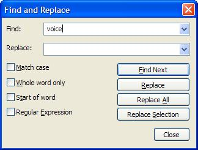

Several types of text files can be included in a BasicSynth project. These include Notelist scores, sequencer files, script files, and notes about the composition. Text files are not contained in the project file, but are stored in separate files in the project directory. You can edit these files directly with any text editor, or with the builtin editor. The editor commands follow common Windows edit conventions. Arrow keys, along with the home and end keys, move the cursor and extend the text selection when the shift key is held down. The following table shows the editor commands. Many of the keys are shown as uppercase by convention. However, unless the command specifically indicates the shift key, you do not need to press the shift key. Text can be selected with either the keyboard or the mouse.
| Toggle insert/replace mode. | Ins |
| Delete selected text. | Del |
| Undo edit. | Ctrl+Z |
| Redo edit. | Ctrl+Y |
| Copy selected text to the clipboard. | Ctrl+C |
| Cut selected text to the clipboard. | Ctrl+X |
| Paste text, replacing any selected text. | Ctrl+V |
| Line copy. | Ctrl+Shift+T |
| Line delete. | Ctrl+Shift+L |
| Line cut. | Ctrl+L |
| Line transpose with previous. | Ctrl+T |
| Selection duplicate. | Ctrl+D |
| Indent block. | Tab |
| Dedent block. | Shift+Tab |
| Delete to start of word. | Ctrl+BackSpace |
| Delete to end of word. | Ctrl+Delete |
| Delete to start of line. | Ctrl+Shift+BackSpace |
| Delete to end of line. | Ctrl+Shift+Delete |
| Go to start of document. | Ctrl+Home |
| Extend selection to start of document. | Ctrl+Shift+Home |
| Go to start of display line. | Alt+Home |
| Extend selection to start of display line. | Alt+Shift+Home |
| Go to end of document. | Ctrl+End |
| Extend selection to end of document. | Ctrl+Shift+End |
| Go to end of display line. | Alt+End |
| Extend selection to end of display line. | Alt+Shift+End |
| Create or delete a bookmark. | Ctrl+F2 |
| Go to next bookmark. | F2 |
| Select to next bookmark. | Alt+F2 |
| Find selection. | Ctrl+F3 |
| Find selection backwards. | Ctrl+Shift+F3 |
| Scroll up. | Ctrl+Up |
| Scroll down. | Ctrl+Down |
| Previous paragraph. Shift extends selection. | Ctrl+[ |
| Next paragraph. Shift extends selection. | Ctrl+] |
| Previous word. Shift extends selection. | Ctrl+Left |
| Next word. Shift extends selection. | Ctrl+Right |
| Previous word part. Shift extends selection | Ctrl+/ |
| Next word part. Shift extends selection. | Ctrl+\ |
| Rectangular block selection. | Alt+Shift+Movement |
| Magnify text size. | Ctrl+Keypad+ |
| Reduce text size. | Ctrl+Keypad- |
| Restore text size to normal. | Ctrl+Keypad/ |
Note: These commands are for the native Windows version of BasicSynth Composer using the Scintilla editor. Some versions of BasicSynth Composer use a different text editor and not all keyboard commands are available.
The text editor includes a find and replace function with optional regular expression pattern matching. To find or replace text, select the Edit->Find menu or press Ctrl-F. The find and replace form is displayed.
Enter the text you want to find in the Find field and any replacement text in the Replace field. These two fields maintain lists of find and replace strings. The four checkboxes affect how text is matched.
Regular expressions allow matching a text pattern. The text editor supports the following regular expressions.
. |
Matches any character |
\( |
This marks the start of a region for tagging a match. |
\) |
This marks the end of a tagged region. |
\n |
Where n is 1 through 9 refers to the first through ninth tagged region
when replacing. For example, if the search string was Fred\([1-9]\)XXX and
the replace string was Sam\1YYY, when applied to Fred2XXX this
would generate Sam2YYY. |
\< |
This matches the start of a word. |
\> |
This matches the end of a word. |
\x |
A \ before a character removes the special meaning of a character. For example, \[ would be interpreted as [ and not as the start of a character set. |
[...] |
A list of characters in brackets matches one of the characters in the set.
A range of characters can be indicated as S-E. Examples:
[Aa] matches upper or lower case A [a-z] matches any lowercase alphabetic character [^A-Z] matches any alphabetic character except uppercase [a-zA-Z] matches any upper or lower case alphabetic character. [0-9] matches any digit |
[^...] |
The complement of the characters in the set. For example, [^A-Za-z] means any character except an alphabetic character. |
^ |
If placed at the bgeginning of the pattern, matches the start of a line. |
$ |
If placed at the end of the pattern, matches the end of a line. |
* |
This matches 0 or more times. For example, Sa*m matches Sm,
Sam, Saam, Saaam and so on. |
+ |
This matches 1 or more times. For example, Sa+m matches
Sam, Saam, Saaam and so on. |